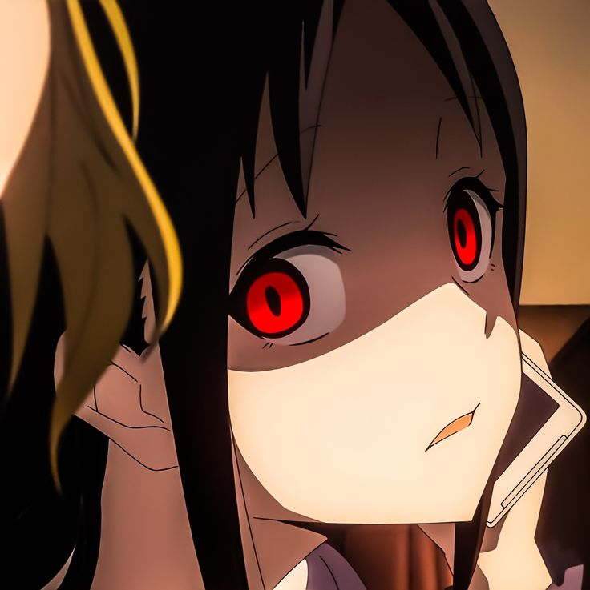

Articles
.jpeg)
Solo leveling
Lisez notre article sur l’anime le plus en vogue du moment.
Suivez l’histoire de Jin sung woo, un chasseur de faible rang qui doit combattre dans un monde dans un monde désormais conquit par les monstres. Critiques et notes seront de mises sur cette article écrit âpres visionnage de la dites séries tires d’un Web comics Coréen Manwha.
Séries de désormais disponible sur Crunchyroll dont le lien est disponible dans notre article.
Un article de Jerome Niel30/12/23

Demon Slayer arrive en 2024
Regardez les 2 premieres saison en attendant sur Crunchyroll

Love is war
Suivons ensemble les aventures de Kaguya shinomiya et Miyuki Shirogane au lycee Schuchin. Une comédie drôle et et intrigante avec de nombreux personnages attachants. Dans une histoire ou le premier qui se déclarera aura perdu. Lisez notre article sur l’anime de romance qui est passée premier au classement de MyAnimeList en 2022.Apprecie et Loue par la critique nous vous parlons aujourdhui de cette anime devenue mastodonte de le domaine auquel il appartient.
Un article de Thimote Chamalet>31/03/21 (modifier)
.jpeg)
Jujutsu kaisen
Ca y est l’arc shibuya est laa . Suivons desormais le drame de Shibuya qui apportera le malheuur sur le monde de l’exorcisme. Yuji Itadori devra-t-il encore faire face a ryomen Sukuna dans cette saison ? Qu’en on pensez les consomateurs. Dans un examen detaille nous allons parler de l’arc Shibuya de Jujutsu kaisen , anime beneficiant de l’animation qualitative de Mappa Studio
30/12/23
Disclaimer
Nous ne sommes en aucun cas sponsorises par Crunchyroll
merci de visitez notre blog, et n'hesitez pas a aller
voir la page a propos